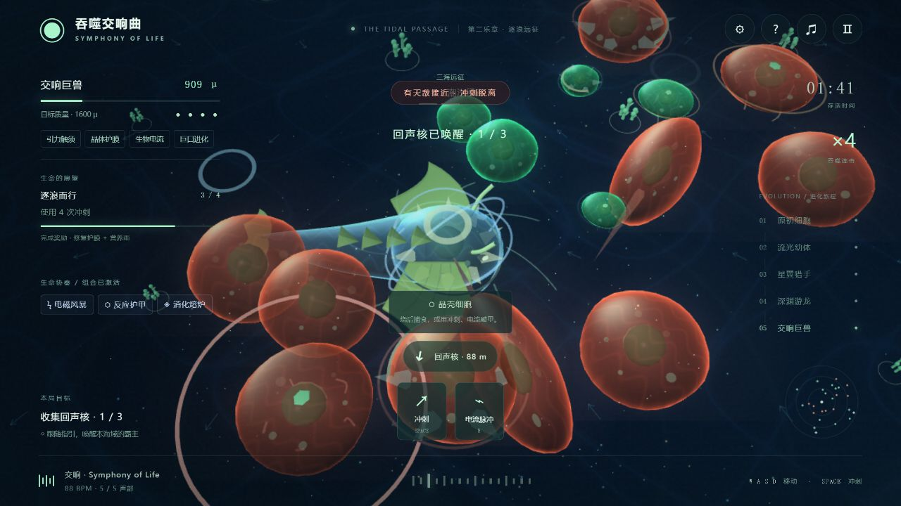
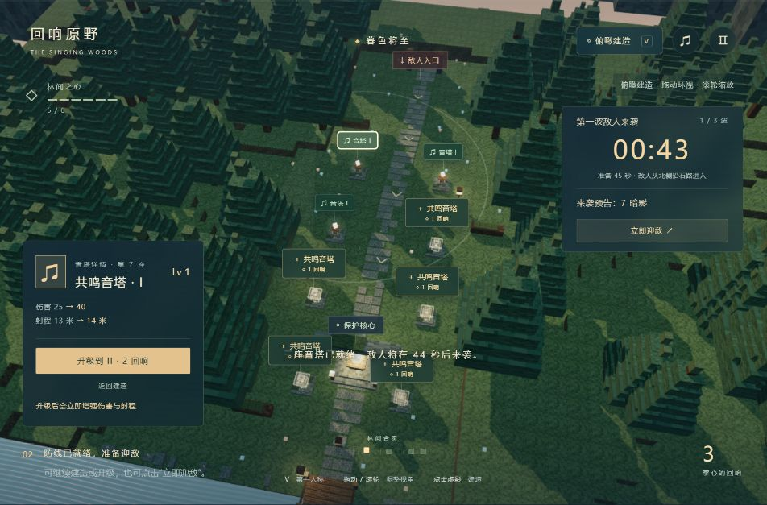
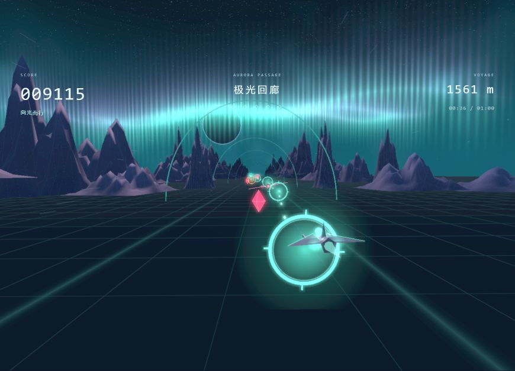

靡靡之音
MIDI.CN
探索三个世界
03
关于靡音
↗
开启声音
WORLD 01 / 音乐生存冒险
吞噬
交响曲
。
SYMPHONY OF LIFE
从一颗微光，长成整个宇宙。
潜入会呼吸的生命之海。吞噬、进化，
让每一次成长，都奏响新的乐章。
潜入生命之海
怎么玩
↗
三海远征
五阶进化
自适应音乐
01
03
THE PRIMORDIAL SEA
LIFE BEGINS WITH A SINGLE NOTE
⤢
轻触，唤起回响
←
切换世界
→
一片宇宙，三种沉醉
CHOOSE YOUR WORLD
← →

01 / DEVOUR
吞噬交响曲
音乐生存冒险
↗

02 / ECHO
回响原野
音乐建造塔防
↗

03 / WAVE
音浪穿梭
音乐飞行冒险
↗
×
MIDI.CN / 靡靡之音